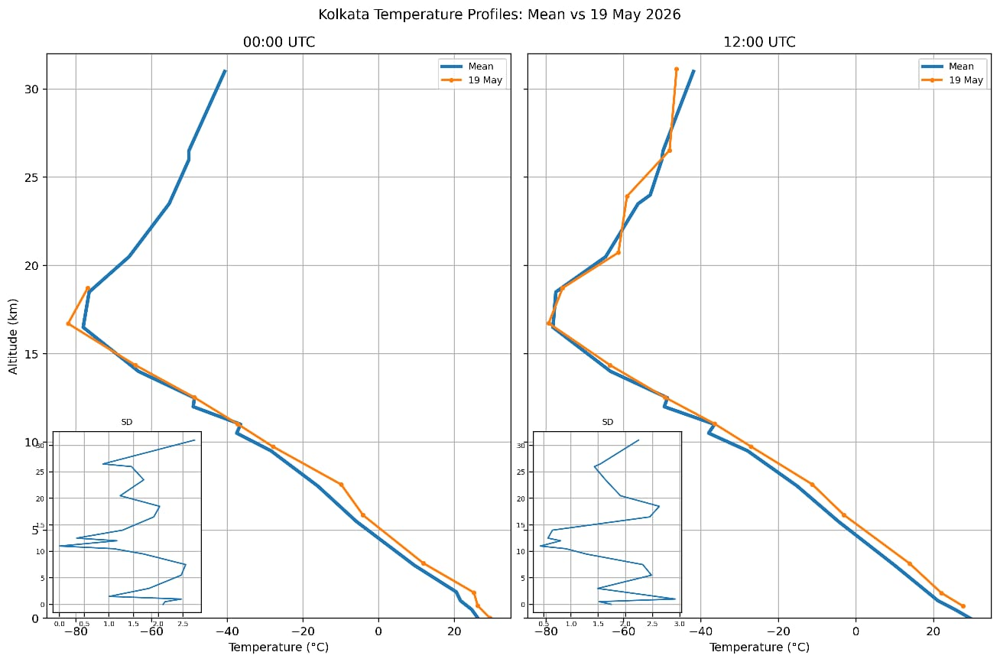
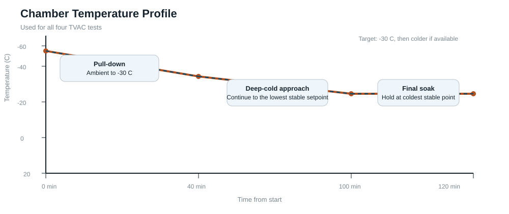

Envisys Tech TVAC Test Plan: Jetson with Copper Straps and Radiator Variants
1. Executive Summary
This document defines a single, repeatable TVAC sequence for screening the latest Jetson payload configuration with copper straps and two radiator options. The goal is to execute four quick thermal tests inside one 8-hour chamber window, using one common chamber profile for all cases so the only meaningful variables are payload power and radiator count.
The four required cases are: 30 W with both radiators, 10 W with both radiators, 10 W with a single radiator, and 30 W with a single radiator. The chamber operator reported that it typically takes 30 to 40 minutes to reach about 10 mbar and -30 C, then about another hour to pull down further. That behavior is consistent with a useful screening profile: a controlled pull-down to low pressure and low temperature, followed by a hold long enough to compare thermal response between the four configurations.
2. What Needs To Be Achieved
- Determine whether the dual-radiator configuration provides a meaningful thermal benefit over the single-radiator configuration.
- Verify the 10 W dual-radiator case as the lower-load reference point.
- Verify the 10 W single-radiator case as the reduced-hardware comparison point.
- Stress the 30 W single-radiator case as the main risk case.
- Capture enough chamber and payload data to support a clear hardware decision after the test.
3. Test Article and Cases
| Case | Hardware configuration | Jetson power | Why it matters |
|---|---|---|---|
| 1 | Both radiators installed | 30 W | Highest load with the strongest thermal hardware |
| 2 | Both radiators installed | 10 W | Lower load baseline for the full-radiator build |
| 3 | Single radiator installed | 10 W | Lower-stress check of the reduced-radiator build |
| 4 | Single radiator installed | 30 W | Highest-stress and most important risk case |
The recommended order is Case 1 -> Case 2 -> Case 3 -> Case 4. That sequence verifies the stronger configuration first, then moves to the more severe single-radiator cases later in the 8-hour window.
4. Chamber Profile
Use the same profile for all four tests unless the chamber has a validated better equivalent. The operator should log the actual chamber behavior against the requested profile so the results can be compared later.
4.0 Client-Supplied Reference Profile
This is the temperature profile supplied in the inputs folder. It is the reference the technician should use when setting up the chamber sequence and explaining what the TVAC run is intended to approximate.

The chamber run does not try to reproduce this entire flight profile exactly. Instead, it reproduces the important thermal intent of the supplied profile within the available 8-hour chamber window: a strong pull-down, a low-pressure hold, and enough dwell to compare the hardware configurations.


The chamber temperature should continue downward after the first pull-down if the facility can do so. If the chamber cannot reliably reach -40 C, use the lowest stable temperature available and log the actual achieved value. The key requirement is comparability: each case should see the same chamber environment, so the temperature response differences come from the hardware setup and power level rather than from a different thermal history.
5. 8-Hour Execution Timeline

| Window | Activity |
|---|---|
| 0:00 to 2:00 | Case 1: 30 W, both radiators |
| 2:00 to 2:10 | Changeover and log review |
| 2:10 to 4:10 | Case 2: 10 W, both radiators |
| 4:10 to 4:20 | Changeover and log review |
| 4:20 to 6:20 | Case 3: 10 W, single radiator |
| 6:20 to 6:30 | Changeover and log review |
| 6:30 to 8:00 | Case 4: 30 W, single radiator |
6. Detailed Technician Procedure
6.1 Before the First Run
- Confirm the payload configuration matches Case 1.
- Verify the chamber instrumentation is ready and zeroed.
- Confirm temperature and pressure logging is active.
- Check that the payload power command can be set to 30 W and 10 W on demand.
- Confirm the chamber operator is aware that the same profile will be repeated four times.
6.2 During Each Test
- Start from the agreed initial chamber condition.
- Pull down toward 10 mbar and -30 C over the first 30 to 40 minutes.
- Continue lowering the chamber temperature to the coldest stable setpoint available.
- Hold that condition long enough to capture the Jetson thermal response.
- Record any anomalies, control adjustments, or deviations from the requested profile.
6.3 Between Tests
- Change only what is needed for the next case: Jetson power level or radiator configuration.
- Record the time required for the changeover.
- If the chamber profile must be shortened, keep the last 30 W single-radiator case as the priority run.
7. What To Record
- Chamber pressure versus time
- Chamber temperature versus time
- Jetson temperature versus time
- Radiator temperature versus time
- Payload power level and start time
- End time for the run
- Any control notes during pull-down, soak, or changeover
Recommended logging interval: 30 to 60 seconds.
8. What Success Looks Like
The test campaign is successful if the technician returns with a clean comparison set for the four cases under one common chamber profile. The result should make it obvious whether the second radiator provides a meaningful thermal benefit, whether the 10 W cases stay comfortably controlled, whether the 30 W single-radiator case is acceptable or clearly risky, and whether the profile and log quality are good enough to support the next hardware decision.
At minimum, the final package should allow the engineering team to compare the four cases directly without guessing about chamber history or changeover conditions.
9. Files and Figures Used
| Type | File |
|---|---|
| Source plan | envisys-tvac-test-plan-jetson-radiators.md |
| Technician figure sources | diagrams/README.md |
| Client-supplied temperature profile | diagrams/temp_profile_0_30km.jpeg |
| Pressure figure | diagrams/chamber_pressure_profile.svg |
| Temperature figure | diagrams/chamber_temperature_profile.svg |
| Execution timeline figure | diagrams/test_sequence_timeline.svg |
10. Closing Note
This is a screening plan, not a full flight replication. The chamber run should be treated as a controlled comparison exercise whose purpose is to validate the latest radiator and strap arrangement under consistent low-pressure, low-temperature conditions. The value of the test is in the repeatable comparison across the four cases and in the quality of the recorded profiles.